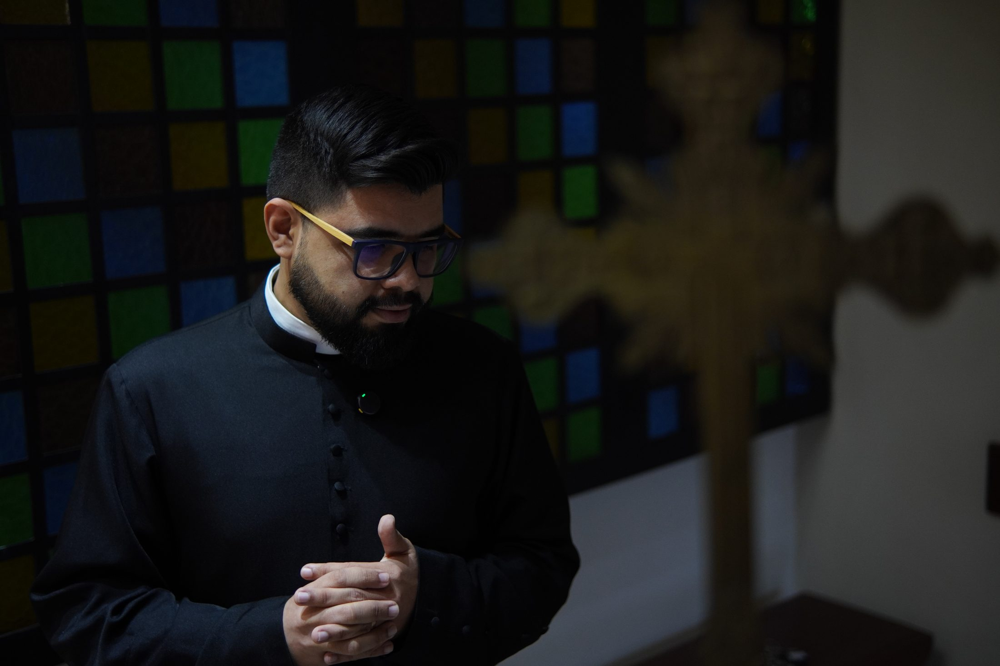
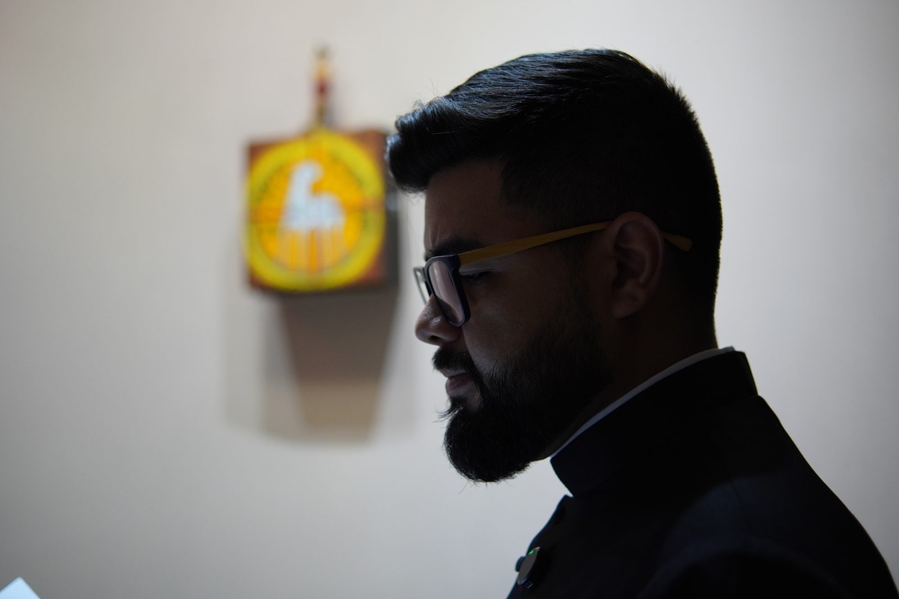

“Que o Teu coração seja o meu coração.”
Lema sacerdotal do Padre Vanderson

Padre Vanderson · Sacerdote
Um espaço de encontro, oração e formação, para você respirar, se aproximar de Deus e não caminhar sozinho.
“Que o Teu coração seja o meu coração.”
Lema sacerdotal do Padre Vanderson
Por onde começar
Envie a sua intenção. Vou rezar por você e pelo que pesa no seu coração.
Deixar meu pedidoDê um passo na vida espiritual com acompanhamento e conselho.
Saber comoArtigos, homilias e materiais para conhecer melhor a fé católica.
Ver a formaçãoAs mensagens em vídeo, para rezar e refletir onde você estiver.
Ver os vídeosMensagem em destaque

Palavra de DeusQuando tudo pede pressa, o Evangelho nos chama a parar. Nesta mensagem, um convite simples para entregar o cansaço a Deus e recomeçar em paz.
Assistir agoraFormação
Textos curtos para rezar melhor e entender o que a Igreja acredita.
O coração deste espaço
Escreva o que você precisa entregar nas mãos de Deus. Cada nome que chega aqui é levado à oração e à Santa Missa. Você não reza sozinho.
Seu pedido é tratado com sigilo e respeito.
Agenda
Momentos para rezar juntos, presencialmente e online.
Orações
Vinde, Espírito Santo, enchei os corações dos vossos fiéis e acendei neles o fogo do vosso amor. Enviai o vosso Espírito e tudo será criado, e renovareis a face da terra. — Amém.
Galeria
Da ordenação à missão — instantes de uma vida dedicada a Deus e às pessoas.
Acompanhe as mensagens
Entre no canal e acompanhe as orações, reflexões e avisos do Padre Vanderson.